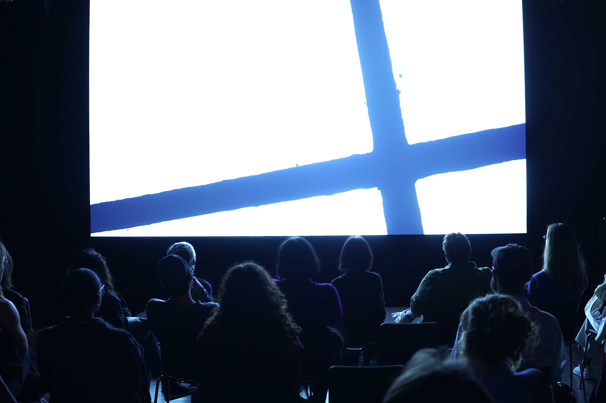
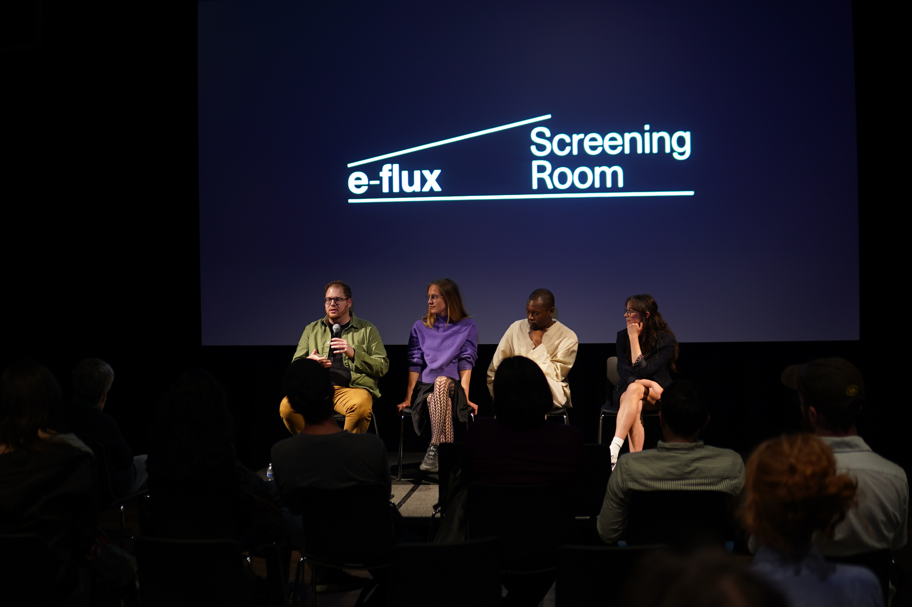

When Linearity Stops
With films by Helen Cammock, Karrabing Film Collective, and Rosalind Nashashibi
e-flux, Brooklyn, NY
Co-curator (with KJ Abudu, Emily Small, and Johanna Thorell)
Karrabing Film Collective, Wutharr, Saltwater Dreams (still), 2016.
e-flux Screening Room presents on Thursday, May 25 at 7pm, When Linearity Stops, the second event of the two-part screening program Clocking Out: Time Beyond Management co-curated by KJ Abudu, Zachary B. Feldman, Emily Small, and Johanna Thorell, the 2022-23 Helena Rubinstein Curatorial Fellows of the Whitney Independent Study Program. The screening will be introduced by the curators and followed by a discussion with the audience.
When Linearity Stops attends to Black, Indigenous, and speculative critiques of hegemonic temporality via appeals to strategies of refusal, concurrent but incommensurable conceptions of time, and non-linear narratives. Deploying diverse yet complementary methodologies and aesthetic sensibilities, the films problematize the notion of a unidirectional time marked by progress and efficiency through the reclamation of the power of idleness, the coexistence of the past and the present, and time travel.
Films:
Helen Cammock, They Call It Idlewild (2020, 19 minutes)
They Call It Idlewild (2020) examines the politics of labor by focusing on its elusive obverse, idleness. The work reflects on what it means to be idle, especially under a neoliberal regime that mandates hyper-productivity. Cammock explores these themes by pairing still, observational shots of domestic interiors, roads, and natural landscapes with vocalized readings of writers and theorists such as Audre Lorde, Mary Oliver, James Joyce, and Jonathan Crary. They Call It Idlewild also probes the racialized, class-based hypocrisies that haunt collective understandings of idleness, additionally investing the concept with agential valences of resistance and refusal.
Karrabing Film Collective, Wutharr, Saltwater Dreams (2016, 29 minutes)
In Wutharr, Saltwater Dreams (2016), an extended Indigenous family argues over what caused their boat’s motor to break down and leave them stranded in a remote, uninhabited area. Based on real events and shot on handheld phones, three varying accounts of the motor’s breakdown are provided by the family’s members through a series of flashbacks. The film is the most surreal of the Karrabing Film Collective’s productions to date, dramatizing in cinematic form the necessity of unmaking notions of reality in order to account for ways of knowing and being that have been exteriorized by coloniality/modernity and its imaging technologies.
Rosalind Nashashibi, Denim Sky (2022, 67 minutes)
Denim Sky’s multi-generational extended family is introduced to the viewer by going about seemingly routine, tenderly rendered events: waking up, chatting about current news, and taking a trip to the seaside. When the family is recruited by an outside government body to travel to outer space and return to tell a story outside of time, miscommunications form between members, making them increasingly unable to bridge the previously non-existent gaps between them. The film asks, what happens when you dismantle reproductive understandings of time? And how does this reveal certain failures already embedded within structures of daily life?
More information here.
When Linearity Stops. Presentation and Q&A, e-flux, NY. Photo: Courtesy of the curators.
When Linearity Stops. Presentation and Q&A, e-flux, NY. Photo: Courtesy of the curators.
When Linearity Stops. Presentation and Q&A, e-flux, NY. Photo: Courtesy of the curators.